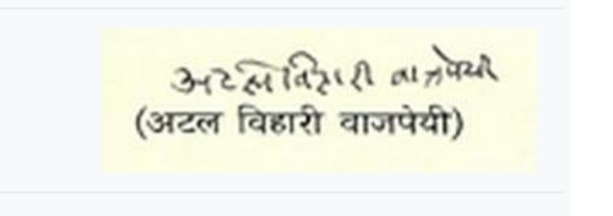

Atal Bihari Vajpayee (25 December 1924 – 16 August 2018) was an Indian politician who served three terms as the 10th Prime Minister of India, first for a term of 13 days in 1996, then for a period of 13 months from 1998 to 1999, followed by a full term from 1999 to 2004. Vajpayee was one of the co-founders and a senior leader of the BJP. He was a member of the RSS, a Hindu nationalist volunteer organisation. He was the first Indian prime minister not of the INC to serve a full term in office. He was also a renowned poet and a writer.
| Born | 25 December 1924 Gwalior, Gwalior State, British India (present-day Madhya Pradesh, India) |
|---|---|
| Died | 16 August 2018 (aged 93) New Delhi, Delhi, India |
| Monuments | Sadaiv Atal |
| Political Party | Bharatiya Janata Party (from 1980) |
| Other political affiliations | Janata Party (1977–1980) Bharatiya Jana Sangh (1951–1977) |
| Alma mater | Victoria College, Agra University (BA) DAV College, Agra University (MA) |
| Occupation | Poet-Politician-writer |
| Awards | Bharat Ratna (2015) Padma Vibhushan (1992) |
| Signature |  |
During a BJP conference in Mumbai in November 1995, BJP President Advani declared that Vajpayee would be the party's prime ministerial candidate in the forthcoming elections. Vajpayee himself was reported to be unhappy with the announcement, responding by saying that the party needed to win the election first.The BJP became the single largest party in Parliament in the 1996 general election, helped by religious polarisation across the country as a result of the demolition of the Babri Masjid.Indian president Shankar Dayal Sharma invited Vajpayee to form the government. Vajpayee was sworn in as the 10th prime minister of India, but the BJP failed to muster a majority among members of the Lok Sabha. Vajpayee resigned after 16 days, when it became clear that he did not have enough support to form a government.In this short period, he also created and administered the Ministry of Consumer Affairs, Food and Public Distribution.
After the fall of the two United Front governments between 1996 and 1998, the Lok Sabha was dissolved and fresh elections were held. The 1998 general elections again put the BJP ahead of others. A number of political parties joined the BJP to form the National Democratic Alliance (NDA), and Vajpayee was sworn in as the prime minister. The coalition was an uneasy one, as apart from the Shiv Sena, none of the other parties espoused the BJP's Hindu-nationalist ideology. Vajpayee has been credited for managing this coalition successfully, while facing ideological pressure from the hardline wing of the party and from the RSS. Vajpayee's government lasted 13 months until mid-1999 when the All India Anna Dravida Munnetra Kazhagam (AIADMK) under J. Jayalalithaa withdrew its support.The government lost the ensuing vote of confidence motion in the Lok Sabha by a single vote on 17 April 1999.As the opposition was unable to come up with the numbers to form the new government, the Lok Sabha was again dissolved and fresh elections were held.